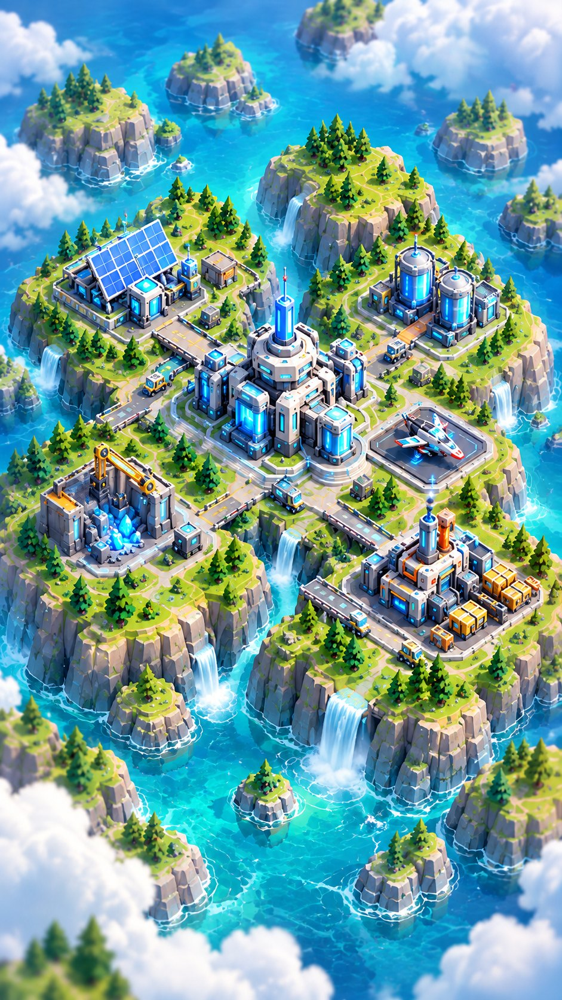

Imperio

CONTRATOS
Contratos completados este ciclo
INVESTIGACIONES
Mejoras seleccionadas
LEGADO
Eficiencia industrial permanente
Megafábrica
PRODUCÍ → GASTÁ → CRECÉ → PRESTIGIÁ
1 · Producí más
2 · Convertí recursos
Los contratos generan créditos, Intel y contribución de Operaciones para tu civilización.
3 · Investigaciones de fábrica y PvP
Comprá con Intel para desbloquear opciones que verás en Arena, dentro de Mejoras de fábrica.
Rankings de temporada
15 partidas puntuables por jugador, con un máximo de 3 por día. 12 bots representan las cuatro civilizaciones y también respetan el límite diario.
⚔ Arena
🏭 Industrial
👑 Imperio
🌐 Civilizaciones
Guerra de Civilizaciones
FORJA, BASTIÓN, ENJAMBRE y NEXO compiten por temporada. PvP aporta Dominio; prestigios aportan Industria; contratos aportan Operaciones. El score online normaliza la contribución para que población bruta no sea la única ventaja.
Tu contribución
Cambiar de civilización requiere Prestigio 100%. Los puntos ya aportados permanecen en la civilización anterior.
Perfil
En la beta usamos Auth anónimo. Si borrás datos del navegador o cambiás de dispositivo, la cuenta anónima puede no recuperarse; antes de premios reales habrá que vincular email/OAuth.
Legados de civilización
Regla de integridad competitiva
Prestigio, producción idle e investigación horizontal pueden mejorar preparación, Intel, variedad de loadouts y progreso industrial. No aumentan directamente daño, vida, recursos iniciales ni velocidad económica en Ranked.